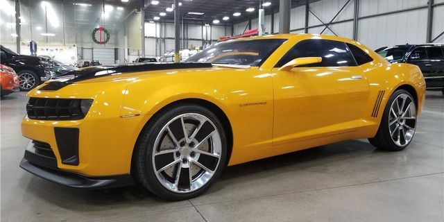

Camaro 2016
Camaro 2016
Dimensiones: 188 in L x 75 in A x 53 in A
Potencia: 275 a 455 CV
Motor: 2.0 L 4 motor en línea, 3.6 L V6, 6.2 L V8
3,339 a 3,956 lb
Transmisión: manual de 6 velocidades
Camaro 2016
Dimensiones: 188 in L x 75 in A x 53 in A
Potencia: 275 a 455 CV
Motor: 2.0 L 4 motor en línea, 3.6 L V6, 6.2 L V8
3,339 a 3,956 lb
Transmisión: manual de 6 velocidades
Corvette 1970
Dimensiones: 174-177 in L x 69 in A x 51-52 in A
Potencia: 130 CV
Motor: 2.2 L 4 motor en línea
Peso vehicular: 2,580 a 2,755 lb
Transmisión: manual de 5 velocidades

Camaro 1969
Dimensiones: 188 in L x 75 in A x 53 in A
Potencia: 330 CV
Motor: 2JZ-GTE de seis cilindros en línea y 3.0 litros biturbo
Peso vehicular: 1.585 kg
Transmisión: manual de 5 velocidades